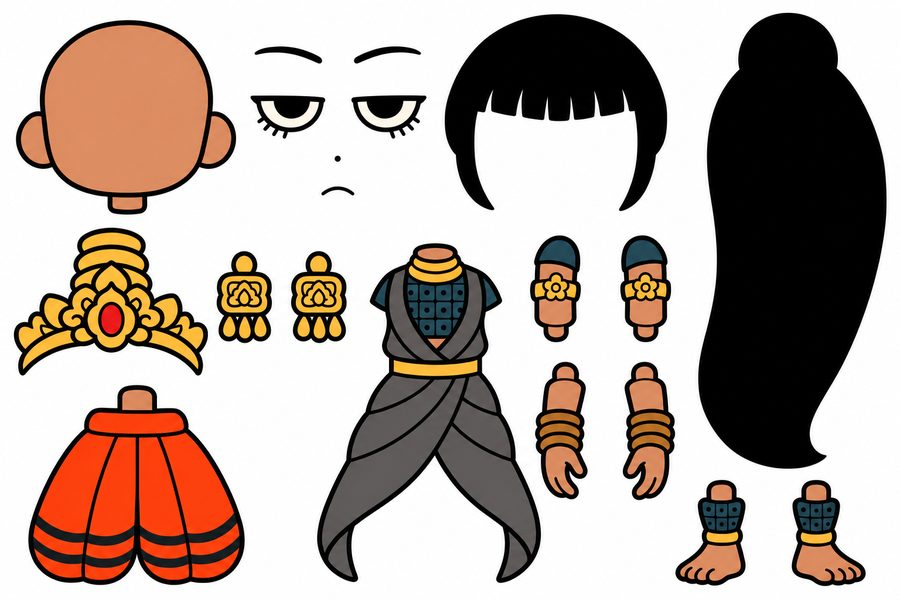
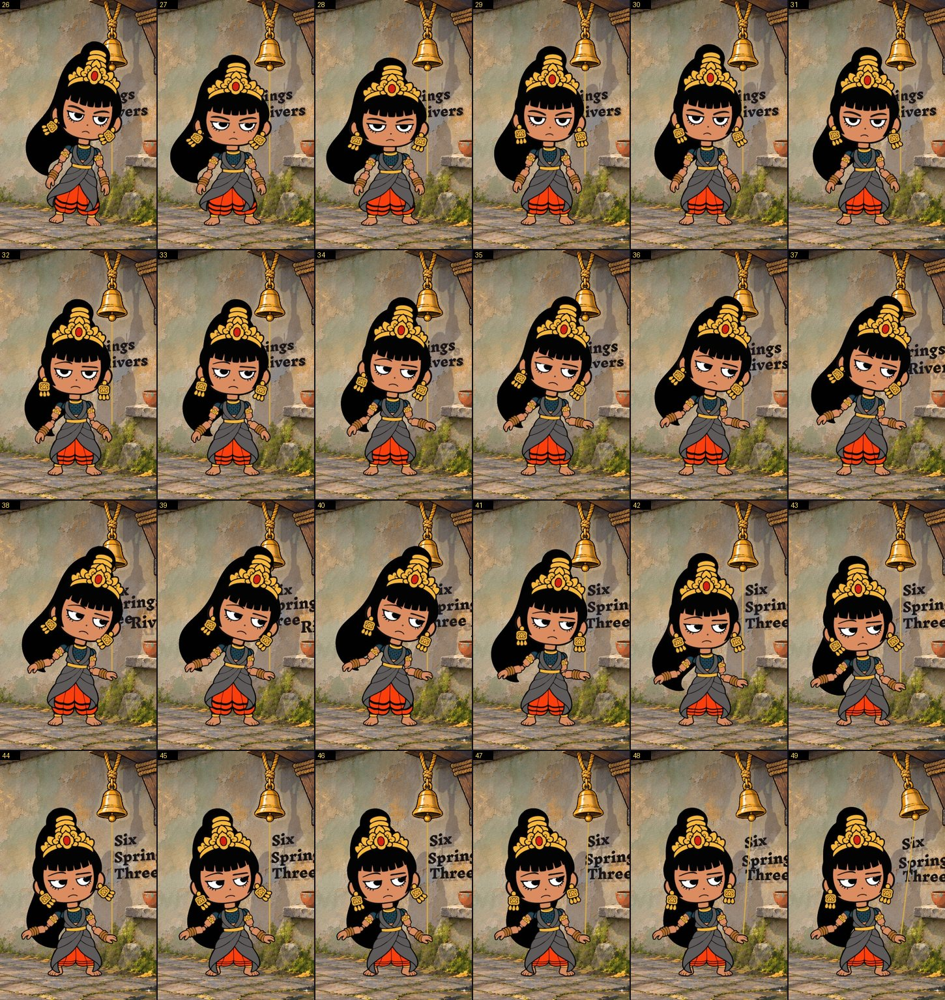
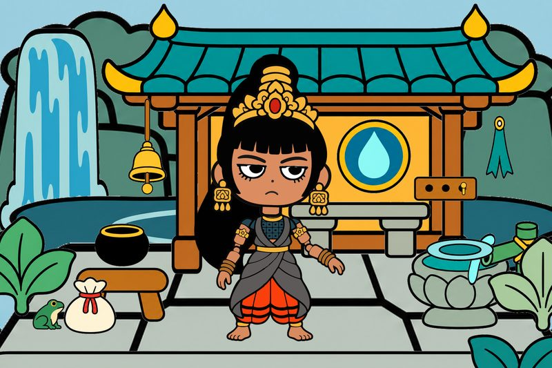
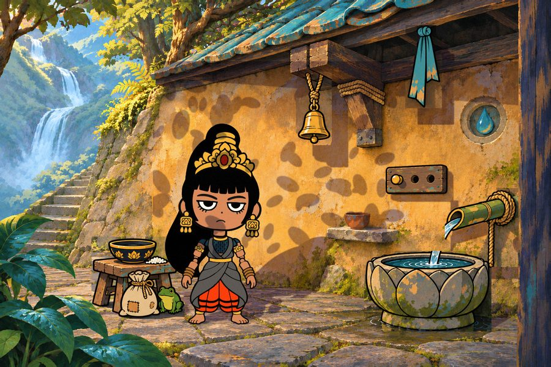
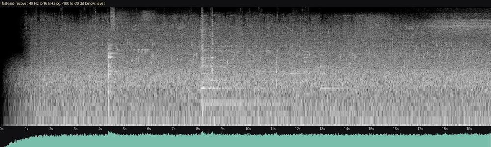
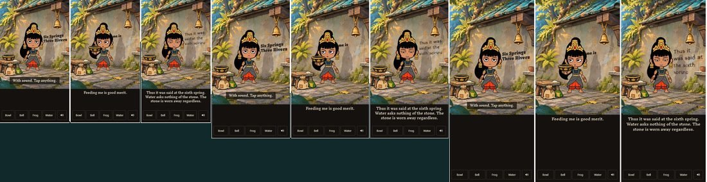

The system underneath is called Dalang, after the puppeteer of wayang kulit. A character is treated as a function: pose numbers go in and a vector drawing comes out. Everything else here either writes those numbers or reacts to them.
Where it started
A tweet by Araminta described a chain from character image to rigged puppet, keyframes, AI in-betweens and a retrace. The chain was tried on this character first.
Tracing the AI frames made the lower body jitter more than three times as much as the plain puppet (a score of 3.09 against 0.82). The video models were dropped. The rig became the system, and hand keying became the motion.
Parts sheet to rig
A parts sheet is generated with every piece separated, complete and on pure white. Each piece is cut out once, traced to Bezier curves and given skin weights.
The result is 0.62 MB of data: 45 parts, 43 controls and 3 views. No pixels are involved at runtime. Each point is moved by deformers, then by linear-blend skinning.

Pose vectors and hand keys
Motion is keyed by hand, pose to pose, as tick, value and ease. She never walks, because front-view cutouts can't. She hops in 9-tick arcs, and her feet move only in the air, so they can't slide on the stones.
Layers are mixed in a fixed order, from body clip to face to a reach on one arm, and springs run after them.

One painting to a 3D stage
One painting sets the look. A depth map (Depth Anything V2) and object masks (SAM 2.1) guide a simple proxy: a wall, a floor and a card for each object, standing at its depth and showing exactly its own pixels. From the locked camera, the stage looks identical to the painting.
Clean plates sit behind the objects so they can move. She is drawn each tick into a texture on her own card, so one light gives her, the bell and the bowl shadows that agree.


Physics and event hooks
Every click is recorded. Each tick, the stage produces an ordered list of what happened (bell, drop, land, catch) with real positions and speeds. Speech, ribbon and sound all read that list and can't change the scene, so any run replays exactly.
A grip counts only if the palm measurably reached its target. If it misses, no bell rings.
Voice to score, mouth and wall
Lines are recorded with character timing (ElevenLabs, the Aki voice) and compiled into one score, in whole ticks. Mouth, body, lettering and audio read the same score, so nothing has to be synchronised.
Mouth shapes cut between drawings and never blend. Her words are placed on a baked map of free plaster, drawn before the shadows, so she blocks them and her shadow darkens them. Ink words hop out of her way, the bell knocks them down and the frog eats them.
Water and ribbon
Generated water frames changed how the water looked more than they showed flow. Instead, the painting's own brush marks are moved down the stream through a looping strip, and a ripple runs through the basin. The loops take 12 frames and 258 KB, and nothing changes outside the masks.
The ribbon is cut from the painting and bent through three bones. Wind drives its springs, and bells, landings and clicks add gusts.
Sound follows the stage
Sound reads the same list of events, so each sound follows something that happened.
| On stage | Heard |
|---|---|
| Bowl lands | A clank scaled by the computed impact speed |
| Bell swing turns | The clapper strikes, darker as it weakens |
| Her arm jerks | Bangles |
| Anything loud | Insects stop dead and creep back |
| She speaks | No new zither note starts |
| Bowl falls | Strings are damped mid-phrase until it is home |
The music is launched note by note so it can stop anywhere. The bell measured C#6, so the piece is in C#, with no third. Ambient beds play overlapping random windows of random takes, so they have no repeat period.

Static site
An allow-list build copies only what the page needs: 14 MB of static files that run from any subfolder. Loading waits for 6.3 MB, and room sound arrives in the background.

.gitignore dropped any folder named vendor/, so three.js would never have shipped, with every local test still passing. A careless edit also broke the renderer while all 132 tests stayed green, because unit tests never load it. Only a browser run on the real page caught that.How the work was run
The project was built over two days by a coordinating Claude session and separate agents, with direction, taste and playtesting from Jonas.
Agents were briefed by letter. Each brief gave the situation, the director's actual words, what was decided and what was open.
Reviews crossed model families. Claude's work was reviewed by GPT-6 Astra and the reverse, always on a frozen commit, with instructions to break it and name where the report overclaimed.
Agents see frames and numbers. They can't hear or feel continuous play, so those calls stayed with Jonas, and they reversed several decisions.
What transfers
- One narrow waistPose numbers in, drawing out. New capabilities add drivers, and the renderer stays the same.
- One owner per truthThe painting has the look, the rig has motion, the score has time, the stage has what happened.
- Cut where identity changesMouths and eye shapes cut, and angles blend. A fade between two drawings looks like a tic.
- React to consequencesRespond to what happened, at its measured speed. A rejected frog hop makes no sound.
- Build what makes the effect trueFake shadows failed. A proxy with one real light gave shadows that agree.
- Inspect frames and the real pageConsecutive frames show whether motion lives. A browser at the real address shows what really shipped.
Credits and open work
- Jonas Heinke created the character, directed the project, and did the listening and playtesting.
- Claude Opus 5.5 wrote the keyed motion, speech, page and sound, coordinated the work, and wrote this page.
- GPT-6 Astra built the stage and physics.
- Codex image mode drew the art.
- ElevenLabs generated the voice and effects; the instruments are VCSL and VSCO 2 CE (CC0).
Still open: the mix hasn't been reviewed by ear, Safari and real phones are untested, the new smaller hands aren't wired in, and next to the painted props she still reads somewhat as a sticker.